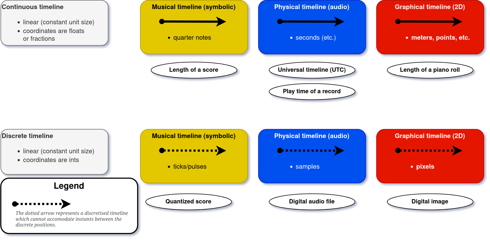
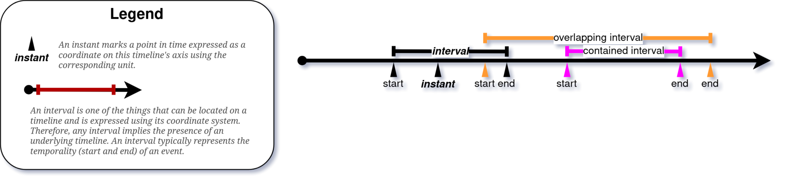
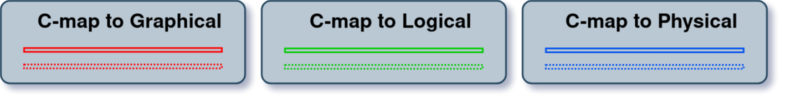
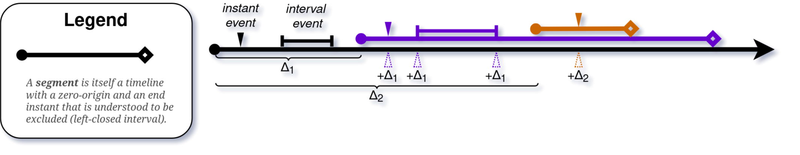
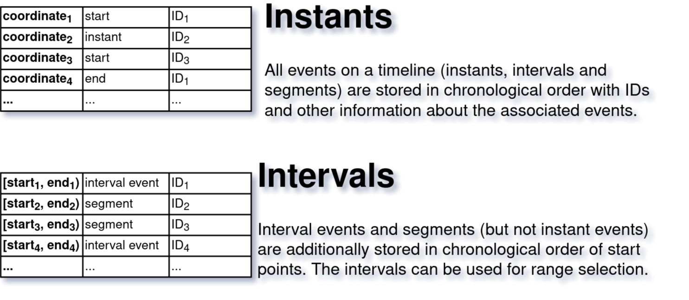

Conceptual Model
The full specification of the TimeToAlign! cross-domain timeline model
This page presents the complete conceptual model underlying TimeToAlign!. The accompanying TISMIR article introduces these concepts through five worked examples; this page serves as the authoritative reference for formal definitions and visual conventions.
The model is organised in six layers, each building on the previous:
- Foundations: Domains, timelines, coordinates, instants, events
- Flow control: Contiguity, breaks, jumps
- Conversion maps: Coordinate transformations
- Nested timelines: Children, segments, timestamps
- Regions and derivative timelines: Named parts, traversals, warps
- Alignment: MatchClaims, AlignmentAnchors, MatchGraph, MatchLine, WarpMap, AlignmentBundle
Foundations
The timeline
A is a positive coordinate axis minimally defined by two properties:
- an origin (the zero coordinate), and
- a measuring unit that determines the type of timeline.
The measuring unit places each timeline in one of three temporal domains (physical, logical, or graphical), each of which admits both continuous and discrete representations. This yields six fundamental timeline types:

| Domain | Modality | Continuous | Discrete |
|---|---|---|---|
| Physical | Hearing | seconds, milliseconds, minutes | samples |
| Logical | Conceptualising | quarter notes, beats | ticks, divisions |
| Graphical | Seeing | metres, centimetres, points | pixels |
The physical domain captures acoustic time as experienced through hearing. The logical domain captures symbolic musical time—the temporal structure encoded in a score, independent of any particular performance or visual rendering. The graphical domain captures spatial representations of time: images, pages, and pixel coordinates.
A key observation: notation is both graphical and logical. A printed score is, in effect, an alignment between a graphical timeline (pixel coordinates on the page) and a logical timeline (quarter notes, beats, measures). This duality is central to the model.
Images are not themselves temporal objects. The graphical domain is called “temporal” because graphical artefacts encode time spatially—a spectromorphological analysis maps seconds to pixels, a score maps beats to horizontal position. The timeline models this spatial encoding of time, not a time dimension intrinsic to the image.
Video and animated scores straddle the physical and graphical domains: they are physical renderings (at a frame rate, in seconds) of graphical content.
Coordinates and instants
Definition: Coordinate
A coordinate represents a time-point in terms of its distance from the timeline’s origin as a positive real number associated with the timeline’s measuring unit.
A coordinate is the model’s most basic quantity: a scalar value paired with a unit (e.g., 3.5 seconds, 480 ticks, 127 pixels). In the implementation, the unit determines the number type rather than being declared beside it: quarters and beats are exact fractions, discrete units (ticks, samples, frames, pixels) are integers, and the remaining continuous units are floats. That is what prevents silent rounding errors. Nothing is quietly rounded to fit an axis: a value that cannot be expressed exactly on a discrete axis raises rather than being nudged to the nearest integer, and rounding happens only where a caller asks for it by name ("round", "floor", "ceil", "truncate"). The declared number type then survives every boundary the value crosses, so a position read back from a fraction axis is a fraction however it was computed.
Definition: Instant
An instant associates a coordinate (a “time-point”) with a signification such as “start of event e.”
Everything a timeline accommodates is associated with a coordinate through an Instant. Two Instants sharing an identical coordinate are synchronous but not identical—the instant at which a note ends is ontologically separate from the instant at which the next note begins, even when both share the same coordinate.
Visualisation: Instant
An Instant is represented as a wedge pointing at the timeline, labelled with a coordinate value.
Two principal sub-types are distinguished:
- StartInstant: marks the beginning of a .
- EndInstant: marks the end of a TimeInterval.
Together, a StartInstant and an EndInstant define a TimeInterval: a half-open interval [s, e) that is left-inclusive and right-exclusive. This convention ensures that consecutive intervals (e.g., successive quarter notes) tile the timeline without gaps or overlaps: the first quarter note occupies [0, 1), the second [1, 2), and so on.
Constraint: The EndInstant’s coordinate must be greater than or equal to the corresponding StartInstant’s coordinate.
Events
Definition: Event
We call anything associated with a timeline via an Instant or a TimeInterval an event.
This is a deliberately broad category. The model is agnostic to what events represent—they may be notes, rests, annotations, audio segments, bounding boxes, or any other entity that possesses a temporal location. Two principal sub-types:
- InstantEvent: defined by a single Instant (zero duration).
- TimeIntervalEvent: defined by a StartInstant and an EndInstant (non-zero duration).
Events may carry arbitrary properties (pitch, dynamics, text labels, file paths) that are relevant for querying and matching but are not part of the temporal model itself.

Basic operations
A timeline supports four basic operations:
- Addition: inserting an Instant (and thereby its associated event).
- Removal: deleting an Instant.
- Lookup: retrieving all Instants at a given coordinate.
- Query: retrieving all TimeIntervals spanning a given coordinate.
The length of a timeline is the distance between its origin and its last coordinate with at least one Instant. A timeline may be locked, preventing the addition of Instants beyond the last existing time-point.
Synchrony
The model distinguishes two forms of synchrony:
- Strict synchrony: Instants sharing identical coordinates on the same timeline.
- Pragmatic synchrony: Instants binned together on the basis of a threshold (quantisation). Pragmatic synchrony is not yet implemented in the library but is planned as a configurable parameter.
Five default propositions govern Instants on a timeline:
- Instants sharing the same coordinate are synchronous.
- Temporally overlapping parts of TimeIntervals are strictly synchronous.
- A later coordinate implies later occurrence in that domain (no cross-domain implication is entailed).
- Every StartInstant necessitates a corresponding EndInstant, and vice versa.
- An EndInstant’s coordinate cannot be smaller than the corresponding StartInstant’s.
Flow Control
Contiguity
Definition: Contiguous TimeInterval
A TimeInterval [s, e) is contiguous in the sense that it spans all coordinates between its Start- and EndInstant monotonically. A TimeInterval is said to span a coordinate c if s < c < e.
Definition: Contiguous with
We call contiguous with TimeInterval [s, e) all Instants synchronous with e. By extension, any event located or starting at the end of a TimeIntervalEvent is called contiguous with it.
Contiguity is the default: a section of music flows into the next. Two phenomena override this default.
Breaks
Definition: Break
A break is a flow-control element that voids the contiguity at the coordinate where it lies: unless a jump there is taken, the flow ends at it.
Events that would normally be contiguous at a break’s coordinate become discontiguous. A break may state the condition under which alone it ends the flow: a fine ends it only after a da capo or dal segno has been taken. A flow ended by a break begins again at the next section break, which ends a section (a movement) without interrupting the flow.
Breaks encode phenomena such as the boundary between a prima volta and a seconda volta ending, or the fine where a piece ends after its da capo.
Visualisation: Break
Breaks are represented as red lines orthogonal to the timeline axis.
Jumps
Definition: Jump
A jump is a flow-control element where the flow may leave the axis. It holds one destination for every place the flow may go on at: a jump target it names, a distance from the jump, or the start of its section. When the flow plays up to the jump and a destination holds, the destination is taken: it makes what lies at its place contiguous with what ends at the jump.
Jumps encode repeat signs, dal segno al coda, da capo al fine, and analogous structures; the signs at one barline (a repeat end and a dal segno, the brackets of alternative endings) are destinations of one jump. Each destination states the conditions under which it is taken: the passes that count (prima and seconda volta depend on the traversal count), how often it is taken, and a destination of another jump that must have been taken first (a to coda acts only after the dal segno al coda). Jump targets mark the places destinations name (a repeat start, a segno, a coda), and barlines record the barlines the source prints.
Visualisation: Jump
Jumps are represented as dotted arrows from the jump to the place of each destination. The curvature of the arrow reflects the distance between the two coordinates.
Together, breaks and jumps, with jump targets, section breaks and barlines, form the flow-control apparatus of the model: the s of a timeline. They determine how a timeline is traversed—which sections are played in what order—without altering the underlying coordinate system. Playing them gives a flow, a sequence of the s the elements never divide, captured by a (see Derivative timelines). What looks wrong on the way (a flow ending at a break, a stretch never played) is reported as a .
Conversion Maps
Definition: ConversionMap (C-map)
A ConversionMap is a typed function attached to a timeline that maps each coordinate to exactly one value. If the function is bijective, we can derive an InverseMap; also permits inverse conversion back to the timeline’s own unit.
Conversion maps are at the heart of the model. They connect coordinate systems, convert between units, and enable the transfer of information across timelines.
Visualisation: ConversionMap
Conversion maps are visualised as double lines adopting colour and pattern from the type of timeline associated with the measuring unit that they output (see Figure 3). Maps outputting values other than coordinates (e.g., string labels) use distinctly different colours or patterns.

Output types
The output of a C-map can be:
- A coordinate in the same or a different unit (e.g., pixels to seconds, ticks to quarter notes). This is the most common case.
- A specifier such as a measure number, a filename, or a label.
- An auxiliary constant (e.g., a fixed y-coordinate for generating a horizontal line in an image).
When the output is a coordinate, the C-map implicitly defines a derived timeline with variant coordinates. This is how a single DiscreteGraphicalTimeline (pixels) can simultaneously express seconds, quarter notes, and (x, y) pairs.
Bounded and unbounded maps
A C-map can be:
- Unbounded: applies globally across the entire timeline.
- Bounded: defines one or several regions of vigour (s) within which it is valid. Outside these regions, the map returns no result.
Map families
The implementation organises C-maps into families:
timetoalign library.
| Family | Description | Example |
|---|---|---|
| Affine (ScalarMultiplicationMap) | y = ax + b | pixels to seconds |
| Lookup (TableMap) | Explicit key-value mapping | tick to tempo |
| Interpolation | Linear interpolation between anchor points | warp path |
| Constant | Returns the same value for any input | y-coordinate of a staff line |
| Straight line | Generates (x, y) pairs for a line | horizontal system in an image |
| Discretisation | Rounds continuous to discrete | seconds to samples |
| Periodic (RotationMap) | Wraps coordinates cyclically | repeating ostinato |
| Metric-aware (FloorMap, MetricMap) | Beat and measure structure | quarters to measure number |
MultiMaps: composing conversion maps
Three composition strategies produce MultiMaps:
- CombinationMap
- Yields outputs from multiple C-maps simultaneously. For instance, combining an x-map and a y-map produces (x, y) coordinate pairs.
- ChainMap
- Applies C-maps in sequence: the output of one becomes the input of the next (e.g., ticks -> beats -> seconds). A ChainMap defines a conversion path and is a key building block for coordinate transfer.
- ConcatenationMap
- Combines bounded C-maps so that each coordinate region maps to one of them. For instance, a score with five systems has a ConcatenationMap of five StraightLineMaps, each valid within its system’s pixel range.
Nested Timelines
A timeline can accommodate not only events but also other timelines.
Children
Definition: Child
A timeline is called a Child when it is recursively nested in a parent timeline.
A timeline can accommodate other timelines (Children) provided they use the same measuring unit. Constraints mirror those for TimeIntervalEvents:
- A Child cannot span an existing in the parent (unless explicitly adopted).
- Adding a Child may extend the parent’s length only when the parent is not locked, and only within the parent’s own parent’s known length.
- Once added, a Child’s length is locked by default to prevent side effects. An unlocked Child’s length may change only within its parent’s known length: a parent never grows because a Child grew.
Children introduce relative coordinate systems within a parent. A Child’s local origin is mapped to a specific coordinate of the parent; its local coordinates are offsets from that origin. This is essential for modelling multi-system score pages, where each system has its own pixel range but is part of a single graphical timeline.
Visualisation: Child
A Child is visualised as a timeline whose EndInstant is marked by a hollow diamond (in contrast to the filled arrowhead of a root timeline).
Children can overlap, leave gaps between them, carry their own C-maps, and nest recursively to arbitrary depth.

Segments and SegmentLines
Definition: Segment and SegmentLine
When all Children of the same parent timeline (“siblings”) are contiguous with each other and tile the parent’s full length, we call them Segments and the parent a SegmentLine. A line is constructed as the runtime class SegmentLine[SegmentClass], for example SegmentLine[DiscreteGraphicalTimeline]; nesting is expressed recursively as SegmentLine[SegmentLine[DiscreteGraphicalTimeline]]. A line is also an instance of its segment class and therefore exposes that class’s full API.
The key advantage of a SegmentLine is that contiguous siblings allow cumulative summing of segment lengths and their C-maps (provided they convert to the same unit relative to the segment’s origin). This enables efficient coordinate conversion across the entire structure. On any timeline, the property is_segment_line checks this structural tiling. as_segment_line() validates the structure and homogeneous direct-child class before adopting the matching parameterized class; to_timeline() drops segment enforcement, while to_typed() re-types children recursively.
Four operations are associated with Children:
- Addition: adding a timeline as a Child, including all its events and C-maps.
- Partitioning: creating a new Child from a parent timeline and a TimeInterval. With
measures=True(oncreate_child(),create_child_from_region()and the twocreate_children_from_*()methods) the Child takes the slice of its parent’s measure map over its span, re-based to its origin (MeasureMap.get_slice()); by default it has none. - Boundary-driven creation:
create_children_from_boundaries()creates k named, concrete Child timelines from k+1 coordinates. Boundaries spanning the full parent produce the structure accepted byas_segment_line(). - Concatenation:
append_child(child, name=..., uid=...)adds a Child at an unlocked parent’s EndInstant and extends that parent.add_child()locks the timelines it embeds by default, so appending to one raisesRuntimeError; nested structures are assembled from the inside out.
| Property | Region | Child | Segment |
|---|---|---|---|
| Is a timeline (holds events) | No | Yes | Yes |
| Siblings must be contiguous | No | No | Yes |
| Can span breaks | Yes | No | No |
TimeStamps
Definition: TimeStamp
A TimeStamp is a set of values reflecting the coordinate of a root timeline, the synchronous coordinates of all Children, and the conversion results of all ConversionMaps associated respectively.
A TimeStamp is a cross-section through a timeline hierarchy at a given coordinate. It answers the question: “At coordinate c of the root timeline, what are the local coordinates in each Child, and what do all C-maps produce?”
Which Children answer follows one containment rule. A Child holds the parent positions from its start up to, but not including, its end, and its end as well where no sibling starts there. A boundary two siblings share therefore belongs to the one starting at it, so one parent position names one segment, while a Child that nothing follows still answers at its own end. The rule applies along the path: a position reaches a nested timeline only if every timeline on the way down holds it, so a grandchild never answers where its own parent leaves the position to a sibling. TimeStamps, timestamp tables, get_children_at() and the MatchStamps of an AlignmentBundle all apply this rule, to every timeline of a tree, nested ones included.
By analogy, a TimeIntervalStamp combines a start TimeStamp and an end TimeStamp, representing the cross-section of an interval through the hierarchy.
Visualisation: TimeStamp
TimeStamps are visualised as a vertical cross-section through a timeline that intersects all Children and ConversionMaps at their synchronous points.

Regions and Derivative Timelines
Regions
A Region is a named part of a timeline defined by a . Regions are useful for referring to parts of a timeline by name (e.g., “Chorus”, “Verse”, “Development”) or by generic labels (e.g., alphabetical letters for representing traversal paths).
Regions are not timelines: they do not accommodate events or C-maps. They can, however, be used as the basis for partitioning a timeline into Children—creating a Child whose boundaries correspond to the Region’s TimeInterval.
Derivative Timelines
Three kinds of derived timelines play a central role in alignment:
- FlowMap and virtual timeline
- A lists stretches of a root timeline— s, child timelines, virtual timelines—in the order they are played, with gaps between them where nothing of the timeline is played. It is computed from the timeline’s flow control (s, s and the other elements), or written by hand for a cut, an order of movements or a set list. Applied, it gives a : the played order as a timeline with an ID, a unit and a length of its own and nothing else, through which positions convert in both directions. Unfolding a position of the score gives every position where it is played; folding a played position gives the one position of the score. For example, a score with a repeat and a dal segno al coda has a FlowMap like [A, B, A, B, C, D] where some sections appear more than once: a position in A unfolds to two positions of the virtual timeline.
- Converted timeline
- A timeline whose coordinates have been transformed to another unit via a or , potentially after applying a .
- WarpMap
- A derived timeline where coordinates have been re-adjusted to align with those of another timeline on the basis of s. See Alignment for the full definition of WarpMap and the pipeline that produces it.
Alignment
The alignment layer is where the model’s cross-domain capability comes together.
MatchClaim
Definition: MatchClaim
A MatchClaim is a claim of equivalence between two events on different timelines, each coordinate on its own timeline’s axis, with its : how it was made and who believes it. A MatchClaim may be synchronous (producing s) or conceptual (structural equivalence without temporal commitment). The sentinel on one side explicitly encodes the absence of a corresponding event on the other timeline.
A MatchClaim names its two events by their IDs, each with its timeline. The model matches events, not coordinates: the claim’s coordinates are its events’ coordinates, and the events stay addressable for everything else that is said about them. A side without an event of its own is given a : an event added to that timeline at the stated position, standing for the other side’s event (its projection_of), or for none where no such event is known. A synchronous claim between two bare positions is instead on both sides: its anchors state the coordinates and no Projection is added. Each side of a stated MatchClaim therefore names an event or a sentinel. AlignmentBundle.create_match_claims() adds the Projections a list of pairs needs and reuses those a timeline already holds. It checks every pair before it adds anything, so a refused list leaves the bundle and its timelines unchanged: a float position on a timeline counting samples, a span that runs backwards, a position past where its timeline can reach (the end of a locked timeline, or an end its parent cannot contain) and a held event’s ID given with a span other than its own are refused.
MatchClaims grow incrementally: an initial claim between events A and B can be extended by adding B-C, creating a match path A -> B -> C that connects three timelines.
Two levels of matching are distinguished:
- Synchronous matching: the matched events occupy corresponding temporal positions (e.g., “this beat in the score corresponds to this moment in the recording”).
- Conceptual matching: the matched events are semantically equivalent but may not share a temporal correspondence (e.g., “both versions have a Bridge section, but they differ in length and internal structure”).
Provenance and beliefs
A MatchClaim carries a certainty, in [0, 1], and one entry, the facility statements use as well. The entry records how the claim was made: who stated it (stated_by), the day, the method (manual, reconciled, imported, inferred or an IRI), the service that made it, the sources it rests on and a note. It also holds the beliefs about the claim: at most one per actor, "true", "false" or "unlikely", each dated. A person stating a claim believes it "true" (create_match_claims(..., actor=) records that belief); a loader or a service records how it made the claim and believes nothing.
A MatchClaim is never deleted and its ID never changes. Whoever disagrees records a belief instead (AlignmentBundle.add_match_claim_belief()), and a correction is a new claim. Nothing derives a truth value from the beliefs; the belief filter reads them for one actor. Every query that reads MatchClaims takes it (get_match_claims(), the MatchStamp getters and the bundle’s coordinate getters): believer= names the actor, and beliefs= the states kept, any of "true", "undecided" (the believer holds no belief on the claim), "unlikely" and "false". The default keeps every state but "false", so a claim without a belief and an "unlikely" one pass. Where one believer is spelled twice in a claim’s beliefs (actors compare as the IRIs they stand for), the claim is read as the most critical of the two. Without believer= nothing is filtered.
The MatchClaim table and the package
An holds all its claims in one MatchClaim table, a (match_claim_table): one row per claim, one column per property of a MatchClaim. A claim given no ID is minted one when it is constructed, and joining a bundle renames none. A MatchClaim is addressed by its ID alone, so AlignmentBundle.from_bundles() refuses two sources holding one ID. On disk the MatchClaim table is match_claims.parquet, and the Projections of every timeline are rows of the , registry.parquet, each naming the event it stands for (projection_of), which is all a Projection holds. The MatchClaim table and the registry write each number once, in the member its number type names (a fraction as numerator and denominator), where memory keeps the float beside the exact ratio; this package form is what MatchClaimField.package_table gives and from_package_table() reads. Both lie beside the , which names each in its resources (see ); a manifest and the files it names make a . The manifest names no event: the claims name events by their IDs, and by default the events stay with the sources they come from while the package holds the events it made itself, the Projections (and the Boxes of a page). to_file(events=True) writes every other event type as well, into the registry and, for a type whose events hold more than their ID and position, a beside the manifest; every event names the that made it. to_file() writes the package and from_file() reads it back. Several manifests share their tables in a package whose package.yaml lists them, which the Package class writes and opens. Writing over a MatchClaim table obeys the succession rule: every claim of the old table is in the new one, with the same timelines, events and anchors; only the provenance may differ.
AlignmentAnchors
Definition: AlignmentAnchor
An AlignmentAnchor is a pure coordinate pair associating one coordinate on timeline A with one coordinate on timeline B. It is a neutral record with no claim semantics—provenance and interpretation are carried by the enclosing . Only synchronous MatchClaims produce AlignmentAnchors.
From a that associates s, two anchors are derived: a StartAnchor and an EndAnchor. Based on the units present in the aligned timelines, s can be constructed.
Visualisation: AlignmentAnchor
AlignmentAnchors are visualised as connecting lines between TimeStamps, using the same or a similar visual style as the Matches they derive from.
MatchClaim cases
A MatchClaim always knows which pair of timelines it connects. It contains 0–2 s (only if synchronous), the synchrony flag, its provenance and its certainty. Its kind, the , is derived from that structure and never stored. Three kinds are distinguished:
- event_match: synchronous, an event or CHUNK on each side, a Projection included—the core alignment operation, and the kind that yields AlignmentAnchors.
- nomatch (): non-synchronous, one event and the sentinel—a positive assertion that the event has no equivalent on the other timeline, oriented from the timeline that has it to the one that lacks it.
- conceptual: non-synchronous, an event on each side—a structural correspondence without temporal commitment.
What a infers through a (a match between two timelines implying coordinates on the sibling members of their groups) is not a MatchClaim and has no kind: it is the graph’s own inferred edge.
A Projection is not a kind of claim: it is an event, and a claim joining a Projection is an event_match like any other. Transferring an annotation to a timeline that has no event for it is such a claim.
MatchGraph and MatchStamp
A MatchGraph is an on-demand analytical structure built from MatchClaims. Nodes are (timeline_id, coordinate) tuples; edges derive from the s of synchronous claims. Each connected component yields a MatchStamp—a synchronised instant across multiple timelines. A MatchGraph can be extended through membership; the edges it infers are its own (inferred_edges), apart from the stated ones. In the Hendrix example, each Match box M1–M15 is a MatchGraph, not a single MatchClaim.
Definition: MatchStamp
A MatchStamp is the union of s from groups synchronously connected by a . It contains one coordinate per participating timeline and, with conversion_maps=True, the results of all s associated with those timelines. Unlike a , where C-Map results are visible by default, conversion_maps on every MatchStamp-producing getter (bundle.get_matchstamp_at(), get_matchstamps_at(), get_matchstamp_table(), MatchClaim.get_matchstamp()) is opt-in and defaults to False. This differing default is a per-context parameter setting, not a break in stamp uniformity: a MatchStamp exposes the identical Stamp interface — get_coordinate_for(), get_coordinates_for(), the get_coordinate() dispatcher, get_unit(), get_conversion_for(), present_timelines, is_interpolated, to_dict() — as a TimeStamp, so a stamp from any source keeps the same structure and behaviour regardless of which keyword defaults were used to produce it.
A MatchStamp from a single contains the TimeStamps for the claim’s . A MatchStamp from a MatchGraph contains all TimeStamps that the graph connects through its connected components. Like a , it can be expanded with within-group coordinates (delegating to ) and, once opted in, C-map conversions.
get_matchstamp_table() extends the same opt-in flag to tabular output: with conversion_maps=True, one derived column is added per timeline for each of its enabled numeric unit-conversion maps (a map with a target_unit), placed after the timeline columns. A label- or structure-valued conversion map still surfaces in a MatchStamp’s display but never becomes a table column. A converted-unit column name that collides across timelines is qualified as "<timeline_id>:<unit>".
The MatchLine
The MatchLine is an ordered sequence of s derived from s, sorted by coordinate on a source timeline. It serves as input for generation.
WarpMap
Definition: WarpMap
A WarpMap is an interpolation-based coordinate mapping derived from a ; it enables non-linear coordinate transfer between s.
A WarpMap is generated from a MatchLine by extracting (source_coord, target_coord) pairs and building an interpolation table. If the source and target timelines have different units, the warped copy is in the target’s unit and of the appropriate timeline type (e.g., a ContinuousLogicalTimeline warped to a ContinuousPhysicalTimeline). A WarpMap requires at least two matching coordinate pairs for interpolation. It is the mechanism by which non-linear temporal correspondences—such as those between a rubato performance and a metronomic score—are captured.
AlignmentBundle
Definition: AlignmentBundle
The AlignmentBundle is a collection of s with inter-group connections; it provides coordinate transfer via offset arithmetic, interpolation, and s.
The AlignmentBundle provides coordinate transfer at two levels:
- Within a group: delegates to
TimelineGroup.get_timestamp_at(), which converts linearly and exactly between members that share one start and one end. - Across groups: constructs a from the claims between the groups that the belief filter keeps, generates s on demand, and uses those WarpMaps for coordinate transfer.
The canonical user-facing query is bundle.get_matchstamp_at(coord, tl_id), which returns a spanning all groups connected to the queried timeline.
The full alignment object hierarchy, from atomic to composite, is:
AlignmentAnchor (pure coordinate pair, no semantics)
↓
MatchClaim (semantic claim about two timelines)
↓
MatchGraph (on-demand graph from multiple claims)
↓
MatchStamp (synchronised instant across N timelines)
↓
MatchLine (ordered sequence of MatchStamps)
↓
WarpMap (materialised timeline copy)Coordinate transfer
The model implements three tiers of coordinate transfer:
- Offset arithmetic for parent–child relationships: a child’s coordinate is the parent’s coordinate minus the child’s offset. Exact and lossless.
- Interpolation within s: members of potentially different units (e.g., seconds and samples) share one start and one end, so a position converts linearly and exactly, from each member’s 0 and length.
- WarpMap for cross-group alignment: derived from a , a WarpMap materialises a complete copy of a source timeline warped to a target timeline’s coordinates.
Two timelines are commensurable if connected by a chain of C-maps, membership in the same , or cross-group s. is the precondition for coordinate transfer.
This layered architecture is what enables TimeToAlign! to propagate annotations, transfer coordinates, and answer queries across arbitrarily many representations of the same musical content—the central promise of the model.
Five Demonstration Scenarios
The TISMIR article demonstrates the model through five worked examples of increasing complexity. Each is accompanied by real-world data in the specimen collection and (where applicable) a tutorial notebook.
| # | Scenario | Key concepts introduced | Specimen |
|---|---|---|---|
| 1 | SUPRA: Aligning a historical piano roll with a digital score | Timeline (six types), C-map, Child, TimelineGroup, commensurability, TimeStamp | specimens/supra_rolls/ |
| 2 | Chorissimo: Flow control in a school song with repeats | Segment, SegmentLine, Region, Break, Jump, FlowMap, RotationMap, unfolding | specimens/audiolabs_omr/Chorissimo_Blue081/ |
| 3 | Thoresen: Transferring annotations between graphical analyses | MatchClaim, InverseMap, y-coordinate warping via custom C-map | specimens/thoresen/ |
| 4 | Beethoven: Multimodal alignment across 23 timelines | FlowMap (unfolding at scale), AlignmentBundle, AlignmentAnchor, WarpMap, MatchLine | specimens/beethoven_op18-4_iv/ |
| 5 | Hendrix: Studying the genesis of a rock song across three versions | MatchClaim (conceptual/synchronous), MatchGraph, NOMATCH, MatchStamp, certainty metadata | specimens/hendrix/ |
For details, see the TISMIR article and the how-to guides.